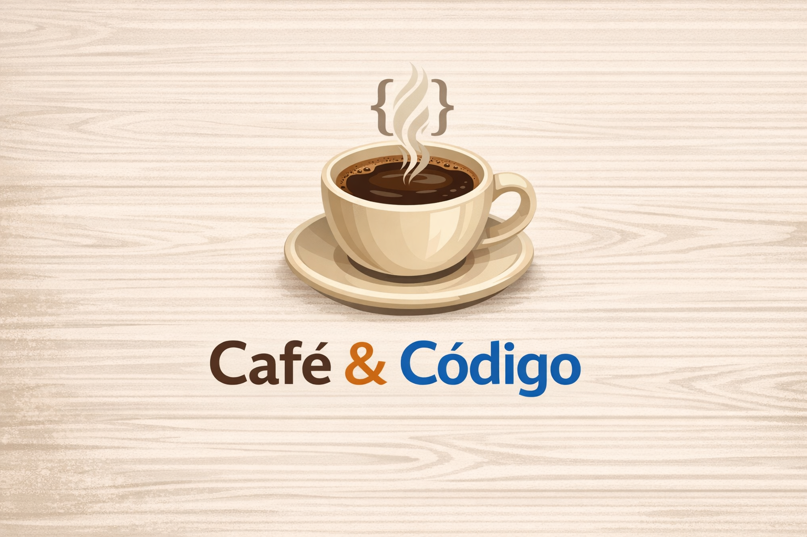

Olá! Eu sou a Raquel, estudante de Análise e Desenvolvimento de Sistemas (ADS).
Este é o meu refúgio digital onde compartilho minha jornada acadêmica, minhas leituras favoritas e, claro, muito café.
Catriona Ward
A história gira em torno de uma casa isolada onde vivem Ted, sua filha Lauren e a gata Olívia (que lê a Bíblia!). O mistério envolve o desaparecimento de uma menina há 11 anos.
Minha impressão: Uma leitura perturbadora que nos prende em um labirinto mental. A autora esconde a verdade até o último segundo!
O bule ainda está enchendo...